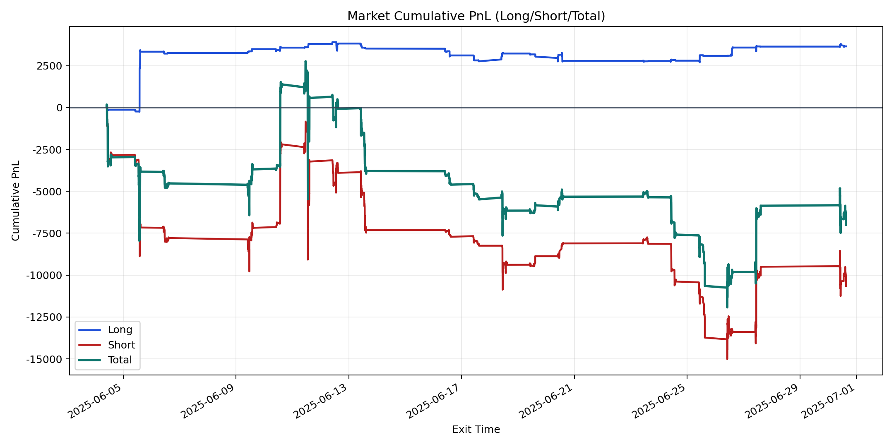
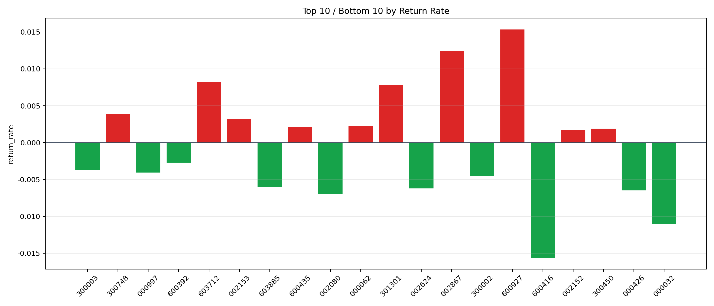

| repo_root | /home/haoranyou/data/output/alpha0.4_1w_5s_3ticks_index_filter/index_weights_500 |
|---|---|
| period_months | 1 |
| period_label | 2025-06-04_to_2025-06-30 |
| start_time | 2025-06-04 09:53:02 |
| end_time | 2025-06-30 15:00:00 |
| n_trades | 3482 |
| n_symbols | 60 |
| total_pnl | -7002.317950000008 |
| long_total_pnl | 3654.2989500000044 |
| short_total_pnl | -10656.616900000014 |
| total_entry_notional | 32453794.0 |
| long_entry_notional | 3438169.0 |
| short_entry_notional | 29015625.0 |
| total_return_rate | -0.000215762691721036 |
| long_return_rate | 0.0010628619331975841 |
| short_return_rate | -0.00036727166483575705 |
| top_symbols_by_return | ["600927", "002867", "603712", "301301", "300748", "002153", "000062", "600435", "300450", "002152"] |
| bottom_symbols_by_return | ["600416", "000032", "002080", "000426", "002624", "603885", "300002", "000997", "300003", "600392"] |

